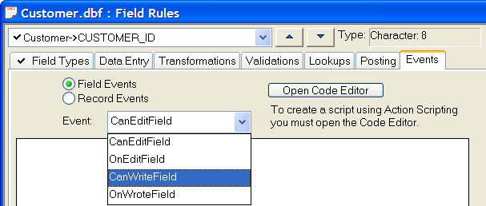
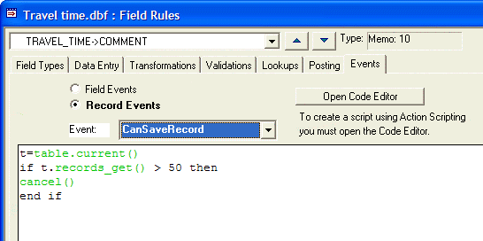

Attaching Scripts to Events
With the exception of Global Scripts, which can be run directly by the user, Xbasic scripts cannot be run directly. Rather, they are run automatically in response to various events (such as Pressing a button, saving a record, deleting a record etc. ) that occur when you are using Alpha Five. Xbasic scripts are "attached" to events, and are run when the event occurs. For example, a script might be attached to the OnActivate event for a control on a form. When that control gets focus, the script is automatically run.
To attach a script to an object event:
Edit the form that contains the object.
Right click on the object.
Select Events > Event_Name from the right click menu. The Code Editor is displayed.
Type the script in the Code Editor.
Select File > Save to save the script.
To attach a script to a field or record event:
Edit Field Rules for the table.
Click on the Events tab. An embedded code editor is displayed. You can define events in this editor, or you can click the Open Code Editor button to launch the Code Editor.
The following field events can trigger scripts.
|
Event Name |
Occurs |
|
CanEditField |
Before the cursor enters the field. |
|
OnEditField |
After the cursor enters the field. |
|
CanWriteField |
Before the cursor exits the field. |
|
OnWroteField |
After the cursor exits the field. |

The following record events can trigger scripts.
|
Event Name |
Occurs |
| CanChangeRecord | Before entering Change mode. |
| OnChangeRecord | After entering Change mode. |
| CanDeleteRecord | Before deleting a record. |
| OnDeleteRecord | After deleting a record. |
| CanEnterRecord | Before moving to the new record. |
| OnEnterRecord | After moving to the new record |
| CanMarkRecord | Before marking a record. |
| OnMarkRecord | After marking a record. |
| CanSaveRecord | Before saving a record. |
| OnSaveRecord | After saving a record. |
| CanUnmarkRecord | Before unmarking a record. |
| OnUnmarkRecord | After unmarking a record. |

See Also
Field Rule Field Events, Field Rule Record Events